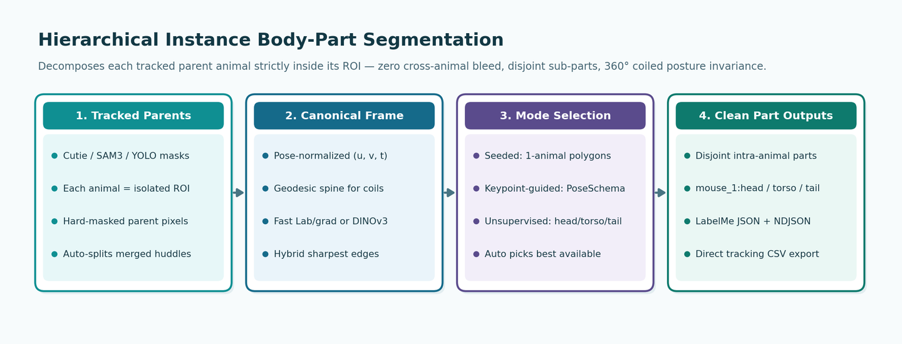
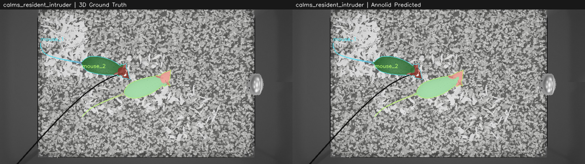

Hierarchical Instance Body-Part Segmentation#
Standard video trackers follow an animal’s whole body (mouse_1, mouse_2). Instance Body Part Segmentation goes one level deeper: it decomposes each tracked parent polygon into non-overlapping anatomical sub-regions — such as head, torso, tail, limbs, snout, or wings — strictly inside each animal’s own ROI.


Fig. 28 Every animal is segmented independently inside its own hard-masked parent crop — preventing cross-animal bleed even during tight social huddles.#
Why Hierarchical Body-Part Segmentation?#
Zero cross-animal bleed: Pixels outside a parent animal’s mask are strictly excluded, even during nose-to-body investigation or mounting.
Merged-parent huddle recovery: When two animals temporarily merge into one parent blob, edge-weighted geodesic + Lab color splitting separates them and freezes prototype drift.
Disjoint sub-parts: Sibling parts inside one animal never overlap (
head,torso,tailpartition cleanly).360° coiled-posture invariance: Uses a pose-normalized body frame with an intrinsic masked geodesic spine so C-shaped, U-shaped, and coiled animals stay cleanly oriented.


Fig. 29 Ground-truth 3D anatomical parts vs. Annolid hierarchical body-part predictions on interacting resident-intruder mice.#
Choose Your Mode & Feature Backbone#
Mode ( |
Inputs Required |
Best For |
|---|---|---|
|
Tracked parent polygons (+ optional seed parts or keypoints) |
Picks |
|
Manual part polygons drawn on 1+ seed frames (one animal is enough!) |
Custom parts ( |
|
Tracked parent polygons + sparse keypoints (DINOv3, YOLO-Pose, TAPNext) |
Turning sparse skeletons into dense anatomical masks without drawing part polygons. |
|
Tracked parent polygons only |
Fast axial decomposition ( |
Backbone ( |
Speed & Dependencies |
When to Pick |
|---|---|---|
|
~1–3 ms/crop on CPU (OpenCV + NumPy only) |
Everyday default for long recordings and laptops. |
|
PyTorch + |
Strongest semantic invariance across coat patterns or lighting shifts. |
|
DINOv3 semantics + high-resolution Lab/gradient edges |
Sharpest boundaries + stability on CUDA / Apple Silicon MPS. |
Run in GUI, CLI, or Python#
(Optional, for
seededmode) Draw body-part polygons (head,torso,tail) inside one animal on a clear frame and pressCtrl+S— prototypes automatically share across other animals of the same species.Choose
Instance Body Part Segmentationin the top AI Model dropdown and clickPred.
# Fast CPU auto mode + CSV export
annolid-run segment-body-parts /path/to/social_assay.mp4 \
--mode auto \
--backbone fast \
--export-csv
# Keypoint-guided fine body parts using a PoseSchema
annolid-run segment-body-parts /path/to/fly_courtship.mp4 \
--annotations /path/to/fly_courtship \
--mode keypoint_guided \
--keypoint-granularity fine \
--pose-schema /path/to/pose_schema.yaml \
--export-csv
# Seeded mode with hybrid DINOv3 + Lab/gradient features
annolid-run segment-body-parts /path/to/session.mp4 \
--mode seeded \
--backbone hybrid \
--dino-model facebook/dinov3-vits16-pretrain-lvd1689m \
--qualify-labels \
--out /path/to/session/body_part_report.json
from annolid.segmentation import (
BodyPartSegmentationConfig,
InstanceBodyPartVideoProcessor,
)
config = BodyPartSegmentationConfig(
mode="auto",
feature_backend="fast",
crop_size=224,
guided_radius=4,
split_merged_parent_masks=True,
)
processor = InstanceBodyPartVideoProcessor(
"/path/to/video.mp4",
results_folder="/path/to/video",
body_part_config=config,
)
summary = processor.process_video_frames(start_frame=0)
processor.cleanup()
print(summary)
Bonus: Compact Cutie (SAM3 Body Parts) Distilled Tracker#
Prefer direct VOS propagation of both whole animals and body parts in a single Cutie pass? Select Cutie (SAM3 Body Parts) in the model dropdown:
Dual-teacher distilled (
SAM 3.1+DINOv3 ViT-L/16) and compressed 4.43× smaller (133.9 MB → 30.3 MB, 55% fewer parameters).Runs 1.48× faster on CPU and up to 2.72× faster on Apple Silicon MPS, while raising held-out body-part
J&Ffrom0.780to0.813.Original
Cutieremains untouched as the default for strict backward compatibility.
Tip
Want deeper parameter tuning (--partial-parts, --num-parts, --no-split-merged-parents)? See the full Instance Body Part Segmentation Guide on the Docs Portal.